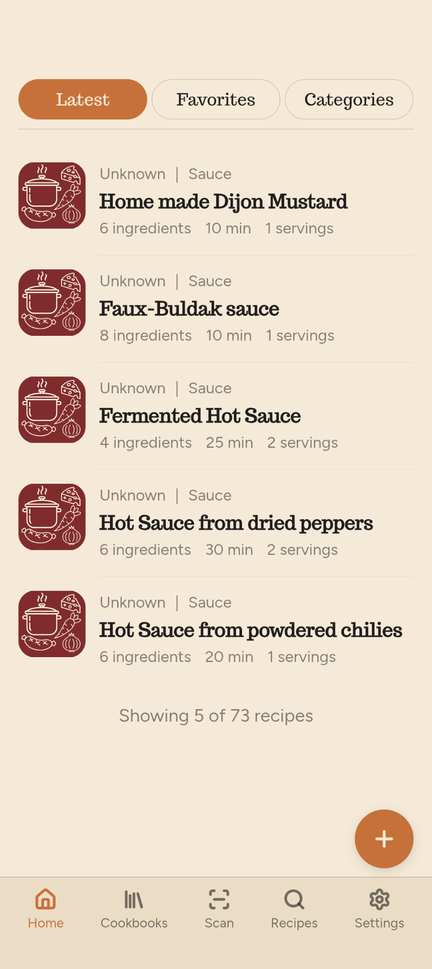
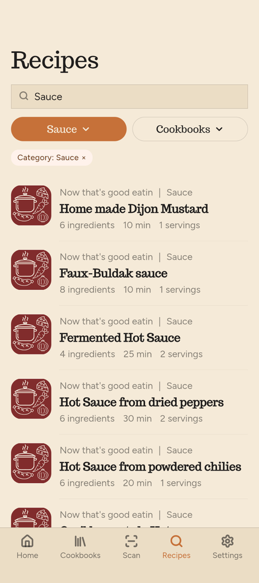
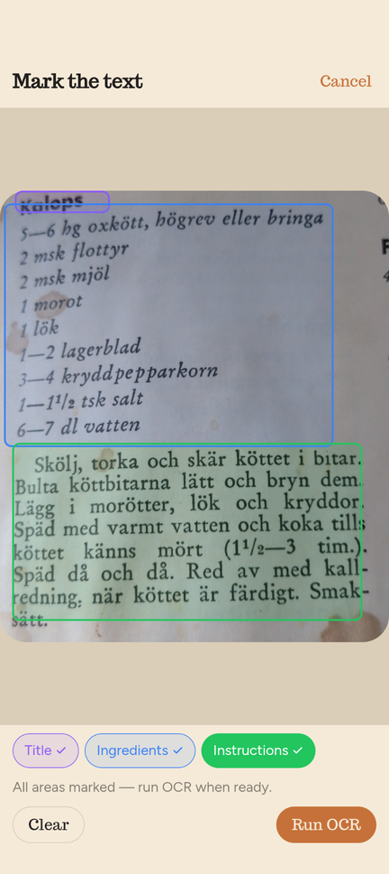
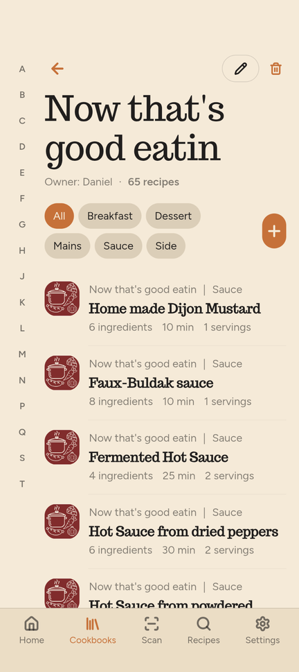

Your recipes, your way
A warm, offline-first recipe app. Scan recipes from photos, organize them into cookbooks, and sync via your own Google Drive — no ads, no tracking.
Scan with OCR
Photograph a recipe page — the app reads the text on your own device and turns it into an editable recipe.
Cookbooks
Organize your recipes into collections with book-shaped covers built from your own images.
Drive sync
Completely optional: back up or share your recipe collection across devices via your own Google Drive account. Your recipes never leave your control.
Offline-first
Everything is stored on your own device. The app works fully offline — sync happens only when you choose it.
Export
Export to Markdown or JSON. Your recipes are always yours, in a format you can read.
No ads
No ads, no analytics, and no selling of data. Ever.
This is what it looks like




Languages
App interface
English, Svenska, Suomi, Deutsch and Français — pick yours in Settings (English is the default).
Scan with OCR
An Auto mode reads any language, and Swedish, English, Finnish, German and French have dedicated recognition.
Your recipes
Write and save in any language you like — the content is yours.